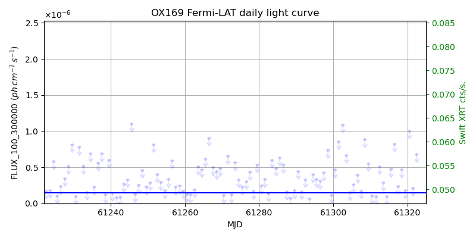
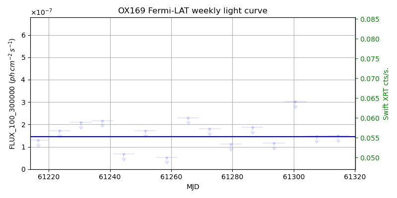
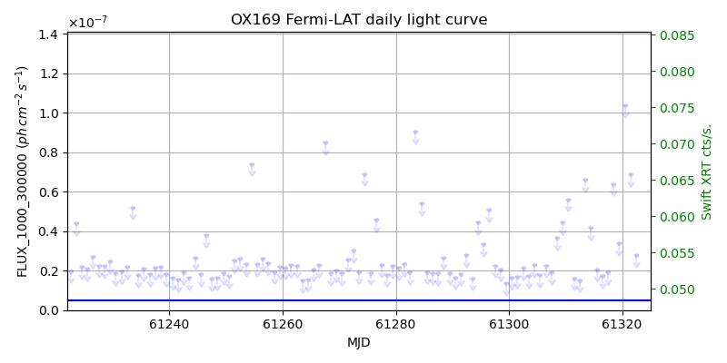
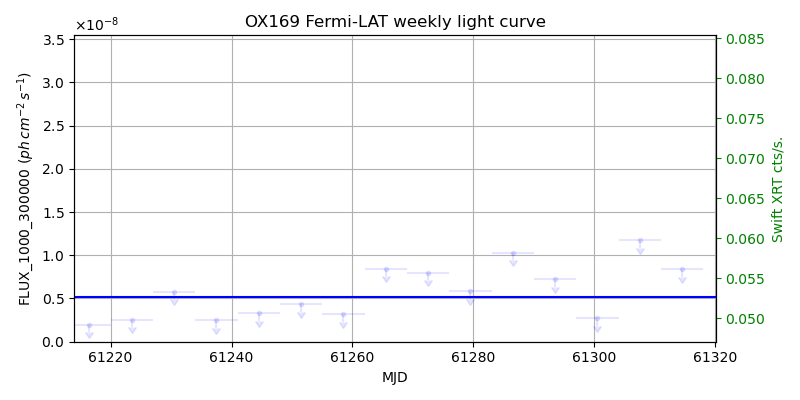

LAT Lightcurve site: https://fermi.gsfc.nasa.gov/ssc/data/access/lat/msl_lc/source/OX_169
Swift site: https://www.swift.psu.edu/monitoring/source.php?source=S32141+17
NED: Query
Time of last update of this page: UT: 2026-10-10 15:29 (MJD: 61323.645)
| Property | Value |
|---|---|
| R.A. | 21:43:35.52 |
| Dec. | 17:43:48.0 |
| z | 0.211 |
| 3FGL SpectrumType | LogParabola |
| 3FGL PL Index | |
| 3FGL Flux_100_300000 | 1.46e-07 1 / (s cm2) |
| 3FGL Flux_1000_300000 | 5.15e-09 1 / (s cm2) |
| 3FGL Flux >200 GeV | 5.61e-13 1 / (s cm2) |
| 3FGL Extrap. Crab >200 GeV | 0.00 |
| 3FGL Flux After EBL Absorption >200GeV | 3.06e-13 1 / (s cm2) |
| 3FGL EBL Crab Fraction >200GeV | 0.00 |

| MJD | dMJD | Flux | dFlux | Frac3FGL | FracCrab>200GeV | EBLFracCrab>200GeV |
|---|---|---|---|---|---|---|
| 61318.50 | 0.50 | 4.68e-07 | 0.00e+00 | 0.00 | 0.00 | 0.00 |
| 61319.50 | 0.50 | 1.78e-07 | 0.00e+00 | 0.00 | 0.00 | 0.00 |
| 61320.50 | 0.50 | 1.01e-06 | 0.00e+00 | 0.00 | 0.00 | 0.00 |
| 61321.50 | 0.50 | 2.12e-07 | 0.00e+00 | 0.00 | 0.00 | 0.00 |
| 61322.50 | 0.50 | 6.83e-07 | 0.00e+00 | 0.00 | 0.00 | 0.00 |

| MJD | dMJD | Flux | dFlux | Frac3FGL | FracCrab>200GeV | EBLFracCrab>200GeV |
|---|---|---|---|---|---|---|
| 61286.50 | 3.50 | 1.87e-07 | 0.00e+00 | 0.00 | 0.00 | 0.00 |
| 61293.50 | 3.50 | 1.17e-07 | 0.00e+00 | 0.00 | 0.00 | 0.00 |
| 61300.50 | 3.50 | 3.02e-07 | 0.00e+00 | 0.00 | 0.00 | 0.00 |
| 61307.50 | 3.50 | 1.47e-07 | 0.00e+00 | 0.00 | 0.00 | 0.00 |
| 61314.50 | 3.50 | 1.49e-07 | 0.00e+00 | 0.00 | 0.00 | 0.00 |

| MJD | dMJD | Flux | dFlux | Frac3FGL | FracCrab>200GeV | EBLFracCrab>200GeV |
|---|---|---|---|---|---|---|
| 61318.50 | 0.50 | 6.39e-08 | 0.00e+00 | 0.00 | 0.00 | 0.00 |
| 61319.50 | 0.50 | 3.40e-08 | 0.00e+00 | 0.00 | 0.00 | 0.00 |
| 61320.50 | 0.50 | 1.04e-07 | 0.00e+00 | 0.00 | 0.00 | 0.00 |
| 61321.50 | 0.50 | 6.88e-08 | 0.00e+00 | 0.00 | 0.00 | 0.00 |
| 61322.50 | 0.50 | 2.79e-08 | 0.00e+00 | 0.00 | 0.00 | 0.00 |

| MJD | dMJD | Flux | dFlux | Frac3FGL | FracCrab>200GeV | EBLFracCrab>200GeV |
|---|---|---|---|---|---|---|
| 61286.50 | 3.50 | 1.03e-08 | 0.00e+00 | 0.00 | 0.00 | 0.00 |
| 61293.50 | 3.50 | 7.25e-09 | 0.00e+00 | 0.00 | 0.00 | 0.00 |
| 61300.50 | 3.50 | 2.74e-09 | 0.00e+00 | 0.00 | 0.00 | 0.00 |
| 61307.50 | 3.50 | 1.18e-08 | 0.00e+00 | 0.00 | 0.00 | 0.00 |
| 61314.50 | 3.50 | 8.43e-09 | 0.00e+00 | 0.00 | 0.00 | 0.00 |
--------------------------------------------------------- Using user-supplied coords: 21:43:35.52 17:43:48.0 2000 --------------------------------------------------------- FLWO UT night of: 2026-10-11 Local Sid. @ Midnight: 00:55 Sunset (-15.0) (local, UT): 19:04 02:04 Sunrise (-15.0) (local, UT): 05:18 12:18 Moonrise (local, UT): Moonset (local, UT): Moon phase: 0.01 --------------------------------------------------------- AzTime LSID UT Obj_el Obj_az Mn_el Mn_az Sep. --------------------------------------------------------- 19:04 19:58 02:04 62.4 113.7 -16.1 264.2 129.3 19:34 20:29 02:34 68.0 124.4 -22.3 267.8 129.0 20:04 20:59 03:04 72.7 140.5 -28.5 271.5 128.8 20:34 21:29 03:34 75.7 164.7 -34.7 275.4 128.5 21:04 21:59 04:04 75.8 194.1 -40.8 279.7 128.2 21:34 22:29 04:34 72.9 218.7 -46.8 284.6 128.0 22:04 22:59 05:04 68.2 235.1 -52.7 290.5 127.7 22:34 23:29 05:34 62.6 245.9 -58.4 297.7 127.4 23:04 23:59 06:04 56.6 253.6 -63.6 307.3 127.1 23:34 00:29 06:34 50.4 259.6 -68.1 320.3 126.8 00:04 00:59 07:04 44.1 264.5 -71.3 338.2 126.4 00:34 01:29 07:34 37.7 268.8 -72.6 0.4 126.1 01:04 01:59 08:04 31.3 272.7 -71.5 22.7 125.8 01:34 02:30 08:34 24.9 276.4 -68.3 40.8 125.5 02:04 03:00 09:04 18.6 280.0 -63.9 54.1 125.2 02:34 03:30 09:34 12.4 283.6 -58.7 63.8 124.9 03:04 04:00 10:04 6.3 287.2 -53.1 71.2 124.6 03:34 04:30 10:34 0.5 291.1 -47.3 77.2 124.3 04:04 05:00 11:04 -5.6 295.1 -41.4 82.2 124.0 04:34 05:30 11:34 -11.5 299.6 -35.3 86.6 123.8 05:04 06:00 12:04 -16.9 304.4 -29.2 90.6 123.5 05:18 06:14 12:18 -19.3 306.7 -26.5 92.4 123.4 --------------------------------------------------------- Dark hours >55 deg.: 4.13 srcstart (UT): 2026-10-11 02:04 srcend (UT): 2026-10-11 06:11